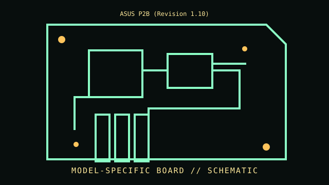

[ INDIVIDUAL COMPONENT // MOTHERBOARDS ]
ASUS P2B (Revision 1.10)
Slot 1 / Intel 440BX, 1998. This entry documents one exact board model/revision; its specifications are not interchangeable with similarly named variants.

REVISION WARNING: Confirm the PCB silk-screen, assembly/AA code and firmware ID on the actual board. Where documentation does not identify one PCB spin, this record states the exact documented model and explains the revision distinction below.
Specifications
| Exact model / revision | P2B PCB revision 1.10 |
|---|---|
| CPU / socket | Slot 1 Pentium II/III and Celeron models only as listed by ASUS for board/BIOS revision |
| Chipset / platform | Intel 82443BX northbridge + 82371EB PIIX4E southbridge |
| Memory | Three 168-pin SDRAM DIMM slots; PC66/PC100/PC133 DIMM compatibility depends on density and FSB |
| Form factor | ATX |
| I/O and expansion | AGP 2x, five PCI and two ISA slots; IDE, floppy, PS/2, serial/parallel and USB; onboard audio on particular P2B submodels |
| Firmware compatibility | Award BIOS; board revision and BIOS ID constrain CPU stepping, multiplier recognition and FSB options |
Compatibility and revision pitfalls
P2B, P2B-F, P2B-DS and OEM derivatives have different layouts and firmware. Revision 1.10 is the stated sample; confirm PCB silkscreen and board model before using a CPU list. Coppermine operation can require the correct VRM/BIOS and supported voltage.
Socket fit alone is not proof of support. Confirm the manufacturer CPU support list, the board's minimum BIOS, memory population table, and exact chassis/power requirements before operation.
Preservation notes
Keep BIOS-chip label and setup/ESCD state documented; inspect Slot 1 retention hardware, voltage-regulator capacitors and ISA/PCI contacts. Preserve original jumpers and write down any FSB/voltage setting before powering.
Record provenance, date/serial codes, board and firmware revision, known repairs and test conditions. Photograph labels and connectors before cleaning or component removal; retain original firmware and configuration data when possible.
Sources & further reading
- ASUS P2B support — manualsOfficial P2B documentation portal; consult the P2B manual and ASUS CPU support list, matching PCB/BIOS revision.
- ASUS P2B downloads and BIOS historyModel-specific manufacturer firmware and release notes.
Manufacturer manuals, CPU lists and archived primary documents take precedence over reseller summaries. If an archived support page omits a revision-specific file, do not assume another revision's firmware is compatible.